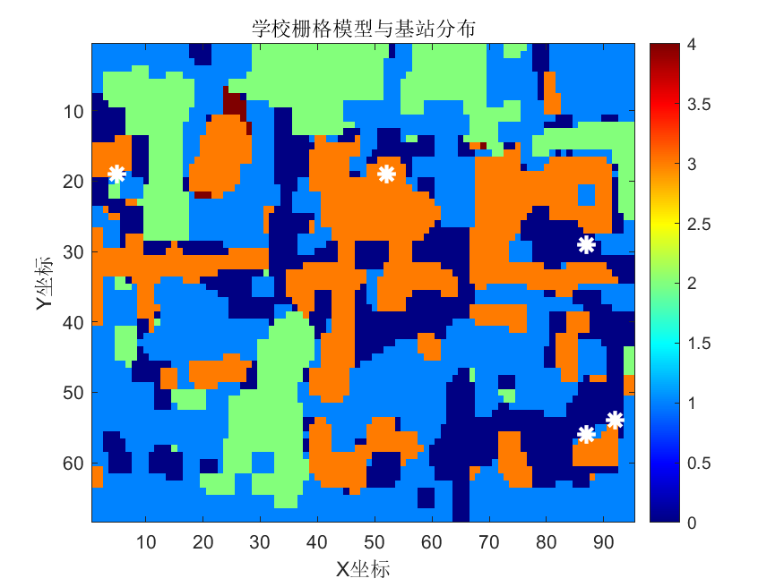

信号覆盖模拟器
请上传一张卫星航拍图，我们将自动处理并运行信号覆盖模拟。
图片要求：
- 支持 PNG, JPEG, BMP 格式。
- 图片中的不同区域需要使用特定的颜色编码来表示地形：
- 空地: 白色 (RGB: 255, 255, 255)
- 建筑物: 暗红色 (RGB: 139, 0, 0)
- 树木: 森林绿 (RGB: 34, 139, 34)
- 道路: 灰色 (RGB: 128, 128, 128)
- 水体: 海军蓝 (RGB: 0, 0, 128)
确保您的图片颜色与上述示例尽量精确匹配，以获得最佳识别效果。
模拟结果

此处将显示学校栅格模型与基站分布图。